SpatialAgent: An Autonomous AI Agent for Spatial BiologyAn agentic AI spatial molecular foundation model of the brain
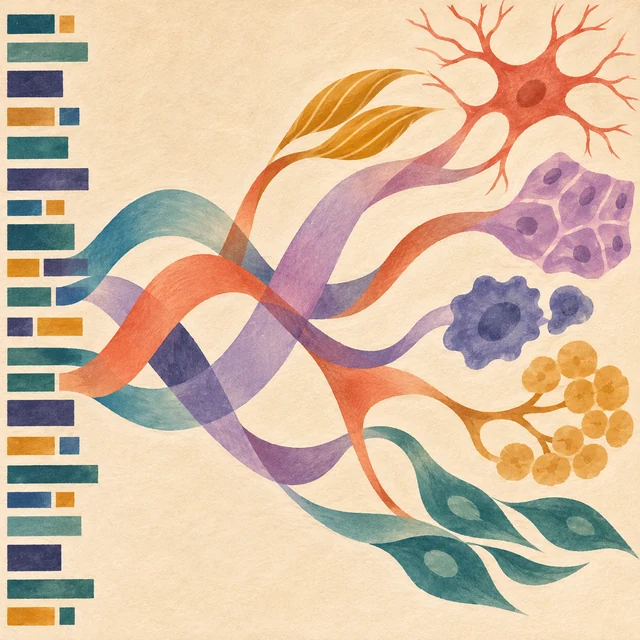
The emerging role of generative AI in functional genomics
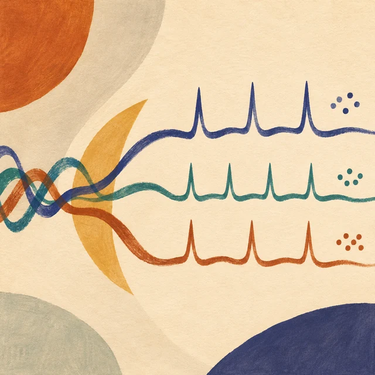
Spike sorting AI agentSpatial transcriptomics AI agent charts hPSC-pancreas maturation in vivoBrain implantation of tissue-level-soft bioelectronics via embryonic development
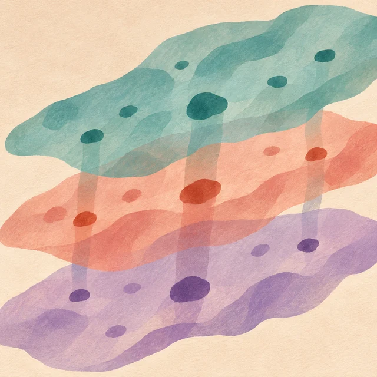
Scalable spatial single-cell transcriptomics and translatomics in 3D thick tissue blocks
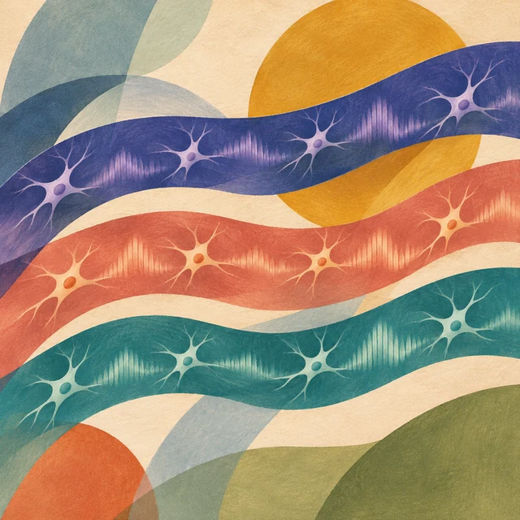
End-to-end multimodal deep learning for real-time decoding of months-long neural activity from the same cells
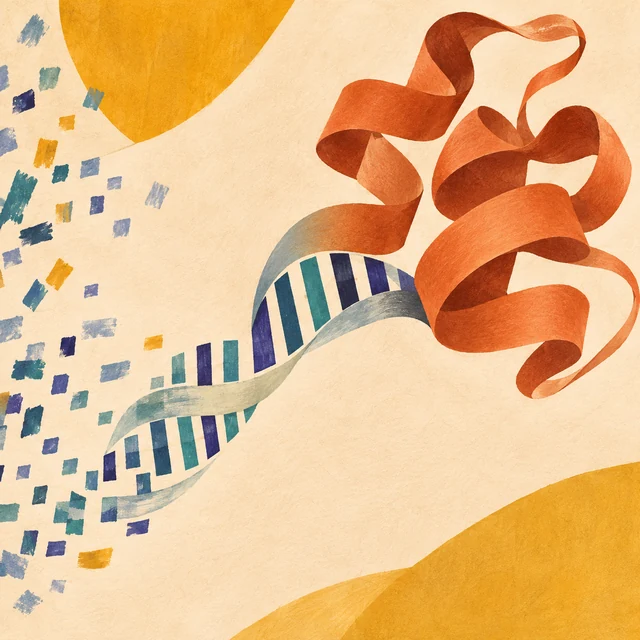
Fine-Tuning Discrete Diffusion Models via Reward Optimization with Applications to DNA and Protein Design
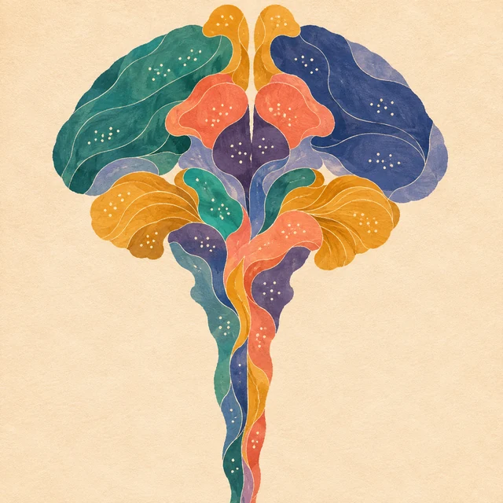
Spatial Atlas of the Mouse Central Nervous System at Molecular Resolution
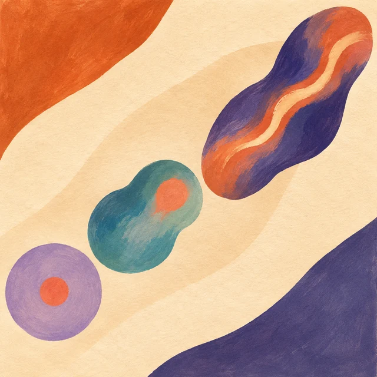
Controlling organoid symmetry breaking uncovers an excitable system underlying human axial elongation
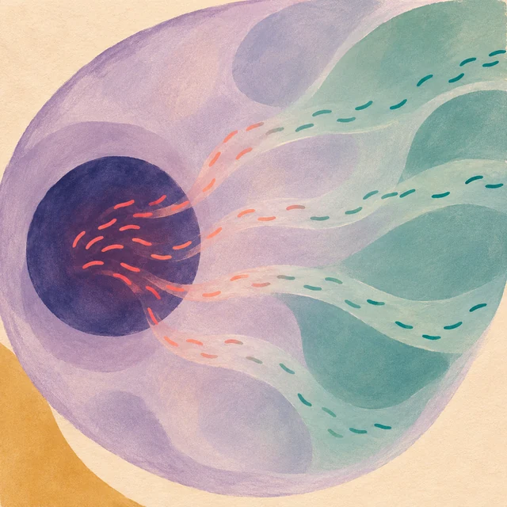
Spatiotemporally resolved transcriptomics reveals the subcellular RNA kinetic landscape
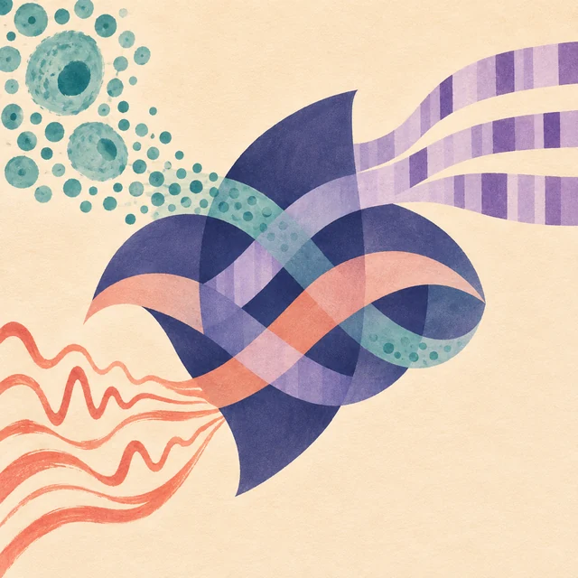
Explainable multi-task learning for multi-modality biological data analysis
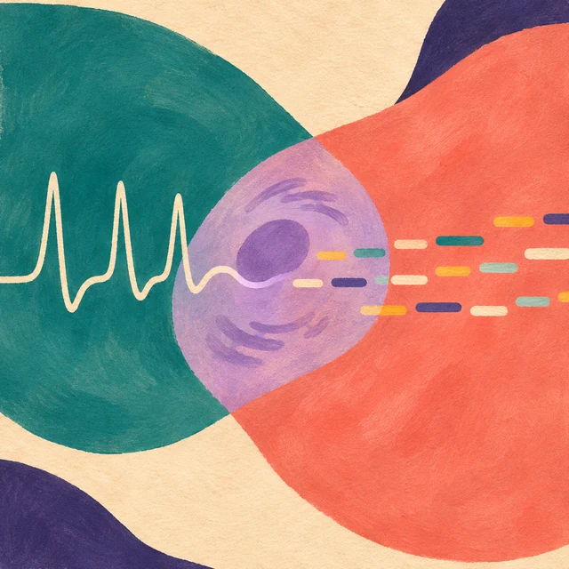
Multimodal charting of molecular and functional cell states via in situ electro-seq
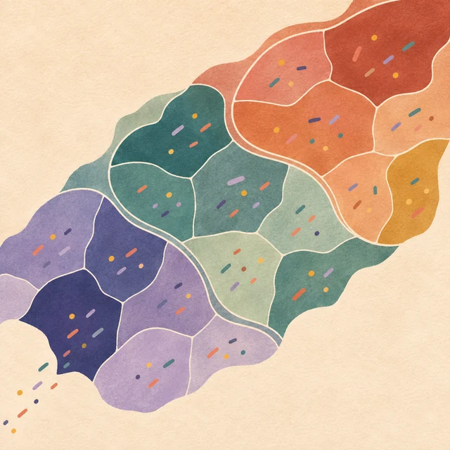
ClusterMap for multi-scale clustering analysis of spatial gene expressionSoft bioelectronics for cardiac interfaces